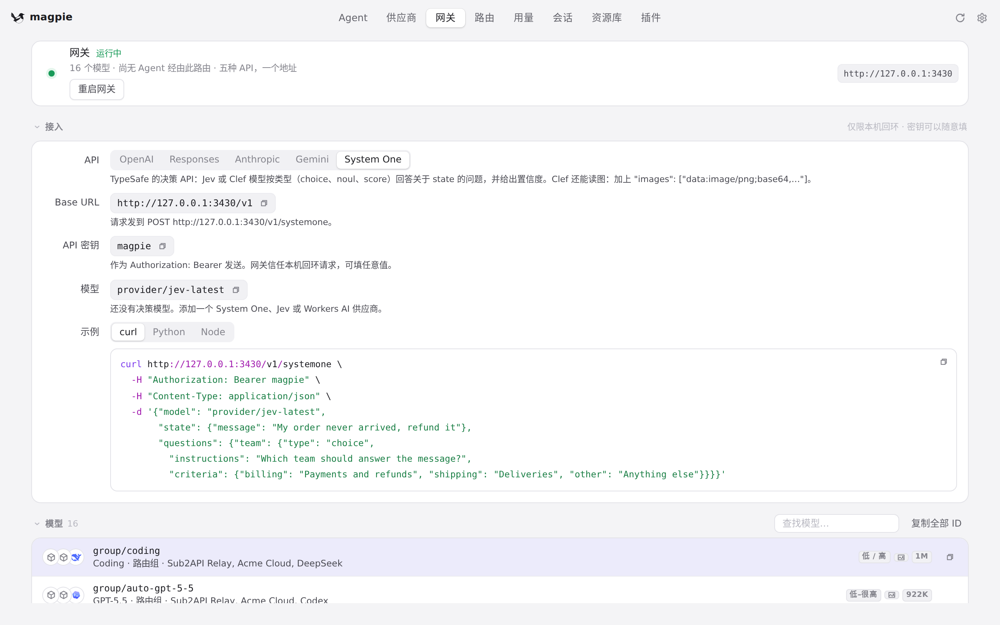
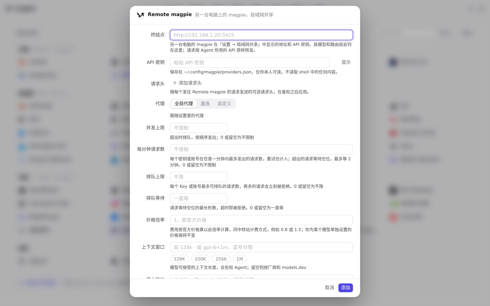

#1282 界面预览
commit 08dbfd5 · 回到 PR · 这个 PR 主要在后端为「远程 magpie」供应商配置 System One 并发现其显式标记的决策模型；对界面来说，远程 magpie 供应商现在会向供应商编辑器交出明确的决策模型列表（可能为空），不再按 Jev 名字猜测，网关 System One 的模型选择也随之变化。
红线是鼠标走过的轨迹，红色圆环是一次点击；底部文字是这一步在做什么。空格暂停，← → 逐段查看。
 网关的 System One 模型位置 · 「接入」区块的 API 选项，切换前
网关的 System One 模型位置 · 「接入」区块的 API 选项，切换前

网关的 System One 模型位置 · System One 的模型字段与下方说明（远程 magpie 的决策模型会列在这里）
 Remote magpie 预设入口 · 添加供应商面板里的预设
Remote magpie 预设入口 · 添加供应商面板里的预设

Remote magpie 预设入口 · Remote magpie 预设表单（它的模型列表决定这里的决策模型）